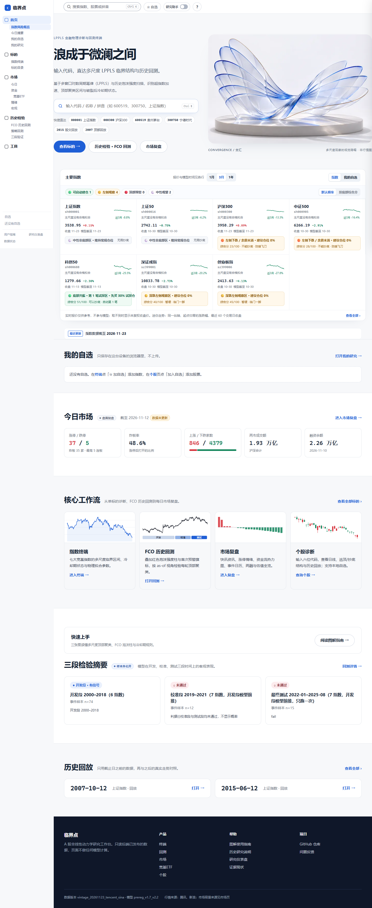
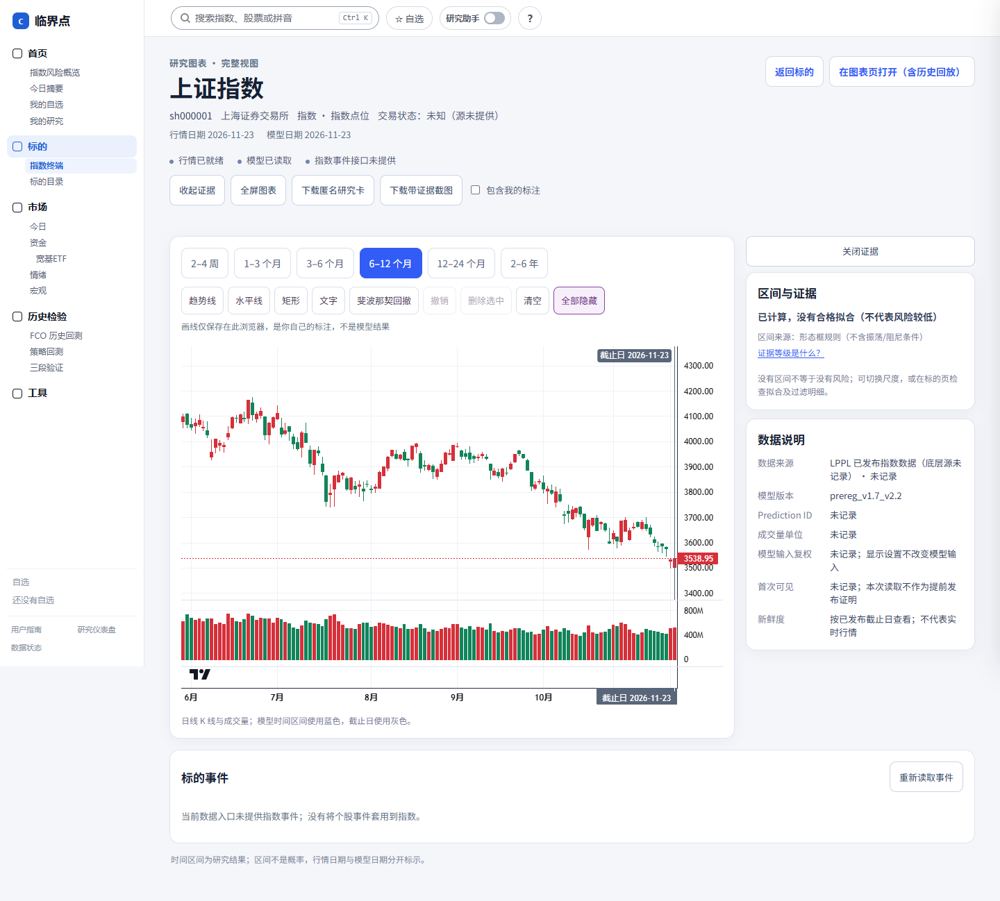
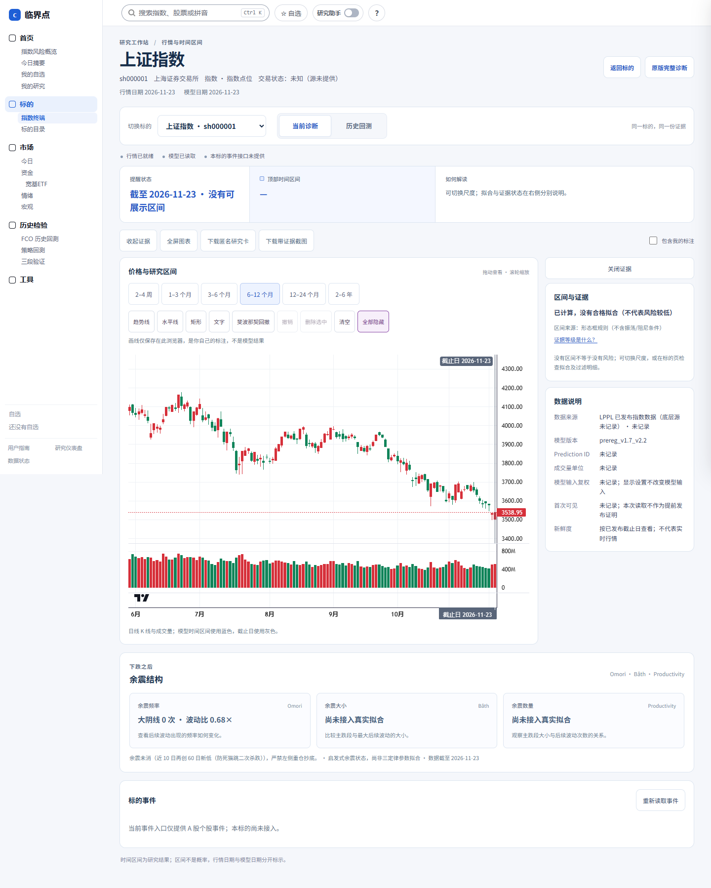
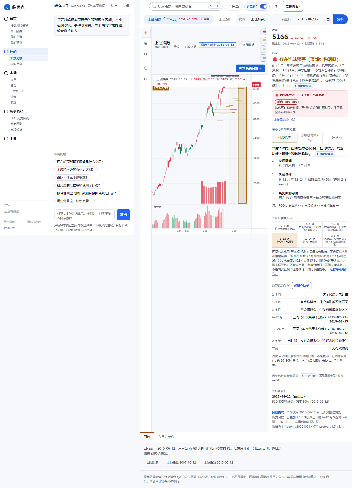
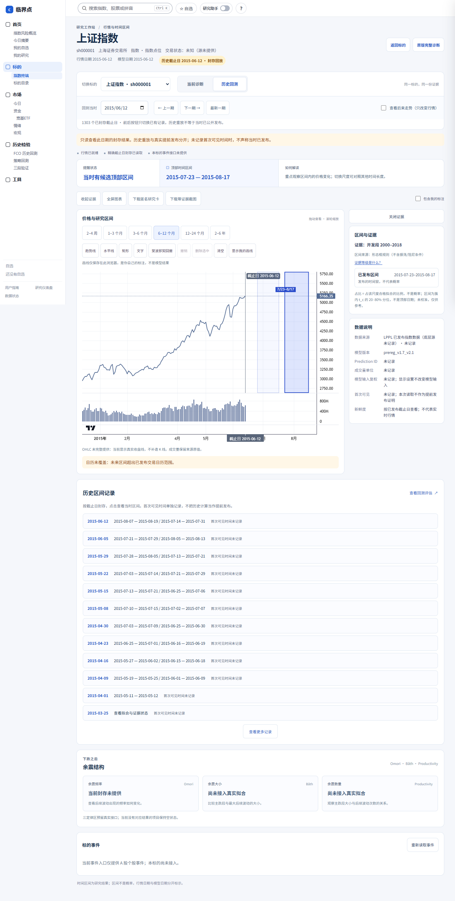
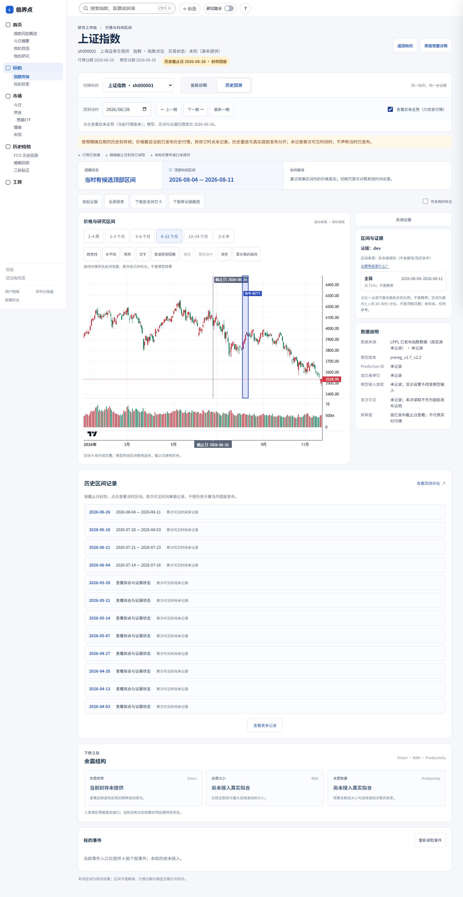
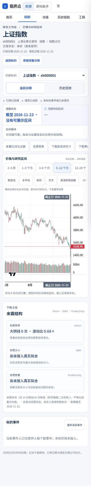

首页不换，研究流程接通
2026-11-23 本地浏览器验收。图片使用真实发布数据；不是新一轮模型拟合。
1. 首页指数卡片
视觉与信息层次保留。变化在点击之后：卡片直接进入对应的专业图表与研究界面。
改动前
改动后
2. 指数详情
同一截止日，上证指数。增加资产切换、诊断／回测和顶部区间摘要，保留 Lightweight Charts 与画线工具。
原专业图表
统一研究终端
3. 历史回放
两侧均为上证指数 2015-06-12 截止日。旧版历史回放使用 Canvas；新终端复用专业 K 线，原版评估仍保留入口。
原版历史回放
新终端封存回放
4. 带区间的实际记录与手机
2026-06-26 的历史记录：后来走势可以展开，历史模型不变。右侧为 390px 布局，工具栏在自身区域内横向滑动。
历史区间与后来走势
390px 当前诊断